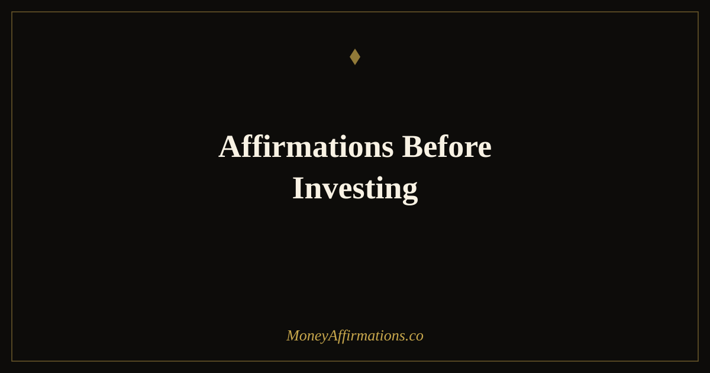

50 Affirmations Before Investing to Invest With Calm and Long-Term Thinking

Most investing advice focuses on strategy: which assets to buy, how to diversify, what fees to avoid. Very little of it addresses the emotional state you bring to the moment you actually make the contribution. Yet research consistently shows that investor behaviour — panic-selling during downturns, overtrading during bull runs, freezing at the moment of commitment — accounts for a significant portion of the gap between market returns and actual investor returns. The problem is rarely lack of knowledge. It is the surge of anxiety, excitement, or doubt that floods in the moment the decision becomes real. These 50 affirmations are a pre-investing ritual: a way to settle your nervous system, reconnect with your long-term strategy, and ensure your mindset does not undermine the plan your research already built.
Investing decisions made from calm produce better outcomes than decisions made from fear or excitement. Use these affirmations to find your centre before you act — not to bypass research, but to ensure your mindset does not sabotage your strategy.
What are pre-investing affirmations?
Pre-investing affirmations are short, present-tense statements you repeat immediately before making an investment — before your first-ever contribution, before your monthly automated transfer, before adding to a position during a market dip, or before committing to a larger or more complex decision. Unlike general wealth affirmations that build a long-term money mindset, these are timed and situational. They act as a mental reset that interrupts the emotional noise — fear, greed, doubt, impatience — and returns you to the calm, strategic headspace from which good investing decisions are made. They do not replace research or financial advice. They ensure that whatever you have learned and planned does not get overridden by the emotional brain in the final moment of action.
50 affirmations before investing
Before your very first investment (1–10)
- I am taking a meaningful step toward my financial future today.
- Starting small is still starting, and starting is everything.
- I do not need to know everything before I begin — I know enough.
- Every long-term investor was once a first-time investor.
- I am calm, prepared, and ready to take this step.
- I am building something that will grow far beyond this first contribution.
- I release the need for perfection and embrace the power of beginning.
- My willingness to start separates me from those who only intend to.
- I trust myself to learn and grow as my investing knowledge deepens.
- This is the first step of a journey I am fully capable of completing.
Before a planned regular contribution (11–20)
- Consistency is my greatest investing advantage.
- I am building wealth one contribution at a time, and it is working.
- Every regular payment I make is a promise to my future self.
- I trust the plan I built when my mind was clear and my research was thorough.
- Automation and discipline compound just as powerfully as interest.
- I do not need to feel motivated — I need to stay consistent, and I am.
- This contribution joins all the others, quietly building something remarkable.
- I am the kind of person who invests steadily regardless of how I feel.
- My future self will look back at this moment with deep gratitude.
- I invest today because I believe in the version of myself I am becoming.
When the market is down or volatile (21–30)
- Volatility is a feature of investing, not a failure of my strategy.
- I do not sell during temporary downturns — I stay the course.
- A down market is not a loss unless I choose to make it one.
- I invest in the long game, and the long game always rewards patience.
- Every market recovery in history has rewarded those who did not panic.
- My strategy was built for moments exactly like this one.
- I do not let short-term noise drown out my long-term signal.
- I am calm in the face of uncertainty because I have a plan.
- Buying during a dip is a decision I will be proud of in ten years.
- I choose strategy over emotion every single time.
For patience with long-term returns (31–40)
- Compounding is working for me right now, even when I cannot see it.
- I am not waiting for wealth — I am building it, steadily and surely.
- My portfolio is a garden: it needs time and tending, not constant watching.
- Delayed gratification is one of the most powerful financial skills I have.
- I am comfortable letting my money work quietly over years and decades.
- I do not need immediate results to trust that this process is working.
- The version of me ten years from now is being built by today's decisions.
- I release the need to see dramatic daily movement — slow growth is still growth.
- My patience with investing is a form of deep self-respect.
- I trust the mathematics of long-term investing completely.
Before a larger or more complex investment decision (41–50)
- I have done my research thoroughly and I trust the conclusions I reached.
- I am making this decision from a place of clarity, not urgency.
- Complexity does not intimidate me — I have asked the right questions.
- I know my risk tolerance and I am honouring it with this decision.
- I am not chasing returns — I am building a deliberate, diversified strategy.
- I take my time with bigger decisions because my future deserves careful thought.
- I am allowed to say no to any investment that does not fully align with my plan.
- I consult the right people, read the right material, and trust my own judgment.
- Every complex decision I navigate builds my confidence as an investor.
- I invest with intention, integrity, and a long-term vision for my life.
How to use these affirmations
The timing of these affirmations matters. Read through the relevant group — whichever set matches the investing moment you are about to enter — before you open your brokerage app, not after. This creates a buffer between your emotional reaction to market data and the decision you are about to make. For first-time investments or larger decisions, take three slow breaths after reading, then proceed. For regular contributions, even a 60-second pass through five or six affirmations before you confirm the transfer is enough to anchor you in your long-term identity rather than your short-term mood.
Write two or three favourites on a card kept near your phone or computer. During volatile market periods, read the volatility group every morning before checking prices. The goal is not positive thinking for its own sake — it is creating a reliable mental state from which sound decisions flow naturally. Over time, you will notice that the anxiety around investing decisions gradually decreases as these affirmations build a stable investor identity that is not shaken by temporary market movements.
Loss aversion, volatility anxiety, and the investor mindset — what the research says
In 1979, Daniel Kahneman and Amos Tversky published their landmark work on prospect theory, which demonstrated that people feel losses approximately twice as intensely as equivalent gains. This loss aversion is not a character flaw — it is a deeply wired survival mechanism. But in the context of investing, it becomes a liability. An investor who checks their portfolio daily and experiences that 2-to-1 emotional weighting on every red number is running a system that was never designed for modern markets.
Shlomo Benartzi and Richard Thaler extended this insight with their research on myopic loss aversion: investors who evaluate their portfolios more frequently take less risk, achieve lower returns, and experience more anxiety — even when the underlying assets are identical. The cadence of attention changes the emotional experience of investing, which in turn changes behaviour.
Daniel Kahneman's System 1 and System 2 framework is equally relevant here. Financial decisions made under emotional stress default to System 1 — fast, instinctive, loss-averse. Long-term investing requires System 2 thinking: deliberate, analytical, patient. Affirmations function as a transition ritual between these two modes. By explicitly stating long-term intentions before acting, you activate the reflective system and create a moment of pause that makes impulsive decisions less likely.
Research on long-term versus reactive investors consistently shows that those who trade least often — who set a strategy and hold it — outperform those who respond to short-term signals. The investor mindset is, at its core, a practice of emotional regulation. These affirmations are one way to train it.
Tips to make them work faster
- Timing: Read affirmations before opening your investing app, not while numbers are already in front of you. Pre-framing your state before exposure to data is far more effective.
- Specificity: Choose the group that matches your exact moment. Volatility affirmations on a calm day have less impact than consistency affirmations used right before your regular contribution.
- Pairing: Combine affirmations with a brief written note — one sentence about why you made this investing decision. The combination of spoken and written intention anchors both systems.
- Repetition over time: The benefit accumulates. Investors who use a pre-investment ritual consistently for three months report noticeably lower anxiety around market movement and fewer impulsive decisions.
- Breath: Three slow breaths before and after your affirmation practice activates the parasympathetic nervous system, reducing cortisol and making calm decision-making physiologically easier.
Frequently asked questions
Should I use affirmations even if I have done thorough research?
Yes. Research addresses what to invest in. Affirmations address how you feel while you do it. Emotional regulation and intellectual preparation work on different parts of your brain. Even well-researched investors are vulnerable to panic-selling or overtrading under stress. Affirmations help ensure your emotional state does not override the decisions your research already justified.
What if I am investing money I cannot afford to lose?
If you genuinely cannot afford to lose the money, that is a practical financial question — not an affirmation question. Only invest money you can leave untouched for your target time horizon. Affirmations work best when you have already made a sound financial decision and need support staying the course emotionally. They are not a substitute for having an emergency fund or reviewing your risk tolerance first.
Can affirmations help me stop checking my portfolio every day?
They can help significantly. Research shows that checking your portfolio frequently increases anxiety and the likelihood of reactive decisions. Affirmations like "I trust the plan I have put in place" and "I am building wealth over years, not days" reinforce the long-term identity that makes frequent checking feel unnecessary. Pair them with a scheduled review cadence — monthly or quarterly — for best results.
These affirmations pair naturally with the broader wealth affirmations collection, which covers the full spectrum of long-term financial mindset work. If you are at the beginning of your investing journey, you may also find the companion post on affirmations for investing valuable for building the general investor mindset before zooming in on these pre-investment rituals.